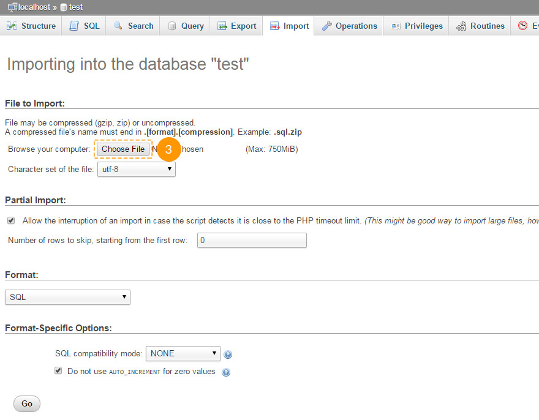

Giriş Bu paket içerisinde neler bulabilirsiniz ve neler kullanılabilir.
Joomla Şablonu aldığınız için teşekkür ederiz. Bu belgeler bir kaç bölümden oluşmaktadır, Joomla Web sitesinin kurulumu ve sıfırdan nasıl yönetileceğine dair olan süreci göstermektedir. Bizler mümkün olduğunca açık ve kolay tekip edilebilmesi adına bu manuel klavuzu elimizden gelenin en iyisini sizler için yarattık.
Joomla CMS Nedir?
Joomla CMS zengin içerikli web siteleri oluşturabilmek için açık kaynak kodlu bir çözümdür. Bu web siteleri güçlü ve çevrimiçi uygulamalar oluşturabilmek adına sağlanır ve yönetebilmek için hemen hemen hiçbir teknik beceri ve bilgi gerekli değildir. Birçok bakış açısı, ease-of-use (kullanım-kolaylığı-için) ve genişletilebilirliği dahil olmak üzere, Joomla mevcut olan en popüler Web sitesi yazılımını yaptık. Daha fazla bilgi
Joomla Şablonu Nedir?
Joomla şablonu Joomla CMS platformu için bir cilttir. Başka bir deyişle, kolay adımlarla yeni bir şablon yükleme ve Joomla Web sitesi görünümünü değiştirebilme. Bu basitlik Joomla şablonunun tüm gerekli kaynak dosyaları ile sağlanır ve size ihtiyacınız olacağı şekilde düzenlemek yada geliştirebilmek için ücretsiz olmasıdır.
Dosya Yapısı
Yüklediğiniz şablon paketi bir kaç klasörden oluşmaktadır. Bütün klasörlerin ne içerdiğini görelim:
- Documentation - dokümantasyon dosyaları içermektedir.
- documentation.html - Ana dokümantasyon dosyası. Buradasınız Haklısınız :)
- joomla - Joomla tema arşivini içermektedir, hızlı yükleme dosyası ve unzip komut dosyası.
- theme###.zip - tema arşivi. Tüm tema dosyalarını içermektedir. Joomla uzantısı yöneticisi aracılığı ile yüklenir.
- fullpackage.zip - içermektedir Tam Joomla kurulum paketi motor dosyaları ile, tema ve örnek içeriği (veritabanı dökümü, örnek fotoğraflar)
- unzip.php - dosyaları ayıklayabilmek için kullanılan dosya fullpackage.zip hosting sunucusuna yüklendiği zaman.
- screenshots - şablonun ekran görüntülerini içermektedir.
- sources - şablon kaynak dosyalarını içermektedir.
- psd - Şablonun Adobe Photoshop kaynak dosyalarını içerir (.psd)
- to_the_root_folder - Web şablonunun canlı demo olarak görüntülenmesini sağlamak için kullanılır, örnek içerik dosyalarını içermektedir. Bu klasör içeriği Joomla kök dizinine yüklenmelidir.
- dump.sql - veritabanı döküm dosyası. Tema örnek içeriğine sahiptir.
- pkg_bundle.zip - tema ile sağlanan ek uzantıları içermektedir.
- fonts_info.txt - Şablonun özel yazı tiplerini indirebilmeniz için bağlantılar içerir.
- info.txt - Kaynak dosyaları ayıklayabilmek için talimatları içerir.
Hazırlamak Bu işi yapabilmek için neye ihtiyacınız var
Joomla web sitesi yapımına başlamadan önce tam olarak hazır olduğunuzdan emin olun. Lütfen, aşşağıdaki hazırlık adımlarını tamamlayın:
Düzenleme Yazılımı
Joomla yazılımı ile rahat çalışabildiğinizi hissetmeniz açısından tüm gerekli uygulamaları önceden indirmenizi öneririz. Bu şablon için canlı demo sayfasına girip gereken yazılımların listesini görebilirsiniz.
Biz genel olarak gerekli olanları buradan söyleyeceğiz, gereksinimleri farklı olan şablonlar için bunlar değişiklik gösterebilir:
- İlk olarak şifre korumalı sources_#########.zip dosyasını ayıklamak için doğru uygulamalar gerekmektedir. Kullanabileceğiniz yardımcı uygulamalar WinZip 9+ (Windows) ve Stuffit Expander 10+ (Mac).
- Ayrıca Adobe Photoshop uygulaması gerekebilir. Şablon tasarımınızın grafik ve görüntülerini düzenlemek istiyorsanız .PDS kaynak dosyalarını düzenlemek için kullanılır.
- Şablonun kaynak kodu dosyalarını düzenleyebilmek için Adobe Dreamweawer, Notepad++, Sublie Text vb bazı kod editörleri gerekmektedir.
- Dosya barındırma sunucunuza (Hosting) yükleme yapabilmek için Total Commander, FileZilla, CuteFTP vb gibi FTP yöneticileri gerekebilir.
Hosting
Joomla CMS - PHP/MySQL tabanlı bir uygulama olduğu için, Joomla ile çalışabilmek için bir barındırma (Hosting) ortamı hazırlamak gerekmektedir.
Eğer canlı bir hosting'iniz varsa uyumlu olduğundan emin olun Joomla yazılım gereksinimleri ve Joomla web sitesini kullanmak üzere hazır olduğundan.
Aksi takdirde bilgisayarınızdaki yerel sunucunuzu kullanarak Joomla'yı local olarak çalıştırabilirsiniz. Yerel bir barındırma sunucusunu oluşturabilmek için localhost uygulamalarını kullanabilirsiniz WAMP, AppServ, MAMP vb. Kolayca herhangi bir program yüklenebilir ve Joomla çalıştırmak için kullanılabilir.
Lütfen, Yerel bir geliştirme ortamı yapılandırması hakkında aşşağıda bulunan derslere bir göz atın:
Başlarken What to click to make this work
Komple Kurulum
Joomla siteniz yok yenibaştan kurmak istiyorsanız
Bu yöntemi kullanarak Joomla CMS motoru, Joomla Şablonu, örnek içerik, ve gerekli tüm uzantılar yüklenecektir.
Şablon Kurulumu
Zaten Joomla tabanlı bir web siteniz var ve sadece yeni bir şablon yükleyerek değiştirmek istiyorsanız.
Bu yöntemi kullanarak Joomla şablonunuzun tüm gerekli uzantıları yüklenecektir.
Komple Kurulum
Sıfırdan bir Joomla web sitesi kurulumu istiyorsanız tam yükleme yöntemi kullanılabilir. Sizin tüm işlemleri yapmış olduğunuzu varsayıyorum hazırlık adımları ve tüm gereken herşeyi.
Veri Tabanını Oluşturmak
Dosyalarınızı sunucuya yükleme işleminiz bittiğinde siz Joomla web siteniz için yeni bir veritabanı hazırlayabilirsiniz. Hosting kontrol panelinden yeni bir veri tabanı oluşturarak veri tabanı yönetim aracınızı oluşturabilirsiniz. (genellikle PhpMyAdmin).
PhpMyAdmin araçları ile 3 basit adımda yeni bir veritabanı oluşturmanız mümkün olacaktır: (Aşşağıdaki slaytları takip edin)
- Veri tabanı listesine erişebilmek için üst gezinti menüsünden Veritabanı dügmesine tıklayın
- "Yeni veritabanı oluştur" alanına veritabanı adını girin
- Sağ tarafındaki oluştur dügmesine tıklayın
Kişisel bir veritabanı, veritabanı listesi görüntülenecektir. Veritabanına erişim sağlayabilmek için adına tıklayın.
-

1. Veritabanı listesine ulaşabilmek için, veritabanı düğmesine tıklayın
-

2. Veritabanı giriş adı
3. Oluştur dügmesine tıklayın -

4. Kişisel bir veritabanı, veritabanı listesi görüntülenecektir. Veritabanına erişim sağlayabilmek için adına tıklayın.
Ayrıca ayrıntılı eğitim videosunu kontrol edebilirsiniz Nasıl bir veri tabanı oluşturulabilir.
Eğer veritabanı oluşturmayla alakalı herhangi bir sorununuz varsa yardım ve destek için hosting sağlayıcınız ile görüşün.
Yükleme ve unzipping
Joomla ile çalışmaya başlayabilmek için barındırma sunucunuza (Hosting) dosyaları yüklemeniz gerekmektedir. Bu işlem hosting dosya yöneticisi veya bazı üçüncü parti FTP yöneticisi kullanılarak yapılabilir.
- Şablon paketinizi dizinin içerisine açın ve "Joomla" yönetimine gidin.
- 'unzip.php' ve 'fullpackage.zip' dosyalarını seçin ve sunucunuza yükleyin( Sunucuya dosya nasıl yüklenir. )
- Sunucunuzda 'unzip.php' dosya yolunuzu yazın (http://sizin_domain_adınız/unzip.php) kendi internet tarayıcınıza.
- Aşşağıda bulunan ekranı görmelisiniz:

Img 1. Unzip.php başlangıç ekranı.
- 'Choose your zip file' kutusundan lütfen fullpackage.zip dosyasını seçin.
- 'Unzip to' dosyaları ayıklamak istediğiniz dizini belirtin.
- 'Unzip' butonuna tıklayarak işlemi başlatın.
Dosyaları ayıklamayı planladığınız dizin için dogru izinleri ayarladığınızdan emin olun. İzinler sunucu yapılandırmasına bağlı olarak CHMOD 755 veya 777 olmalıdır.
Joomla CMS Kurulumu
Lütfen, tüm hazırlık adımlarını tamamladığınızdan ve gerekli herşeyin hazır olduğundan emin olun.
İnternet tarayıcınızı açın ve adres çubuğunuza Joomla dizininizin yolunu girin(e.g. http://sizin_domain_isminiz/joomla). Siz ilk olarak Joomla kurulum ekranını görmelisiniz:
1. Adım Yapılandırma (Configuration)
"Dil Seçin" (Select Language) kutusunu kullanarak kurulum dilinizi seçin.
Lütfen dikkat:(Select Language) "Dil Seçin" kutusu sadece Joomla yükleme işlemi dilinin seçilmesine olanak sağlar. Bu sizin web sitenizin dilini etkilemez.
Sizin "Ana Yapılandırma" (Main Configuration) bölgesindeki zorunlu tüm forum alanlarını doldurmanız gerekmektedir. Gerekli alanlar * yıldız sembolleri ile işaretlendirilmiştir.
"E-postanız" (Admin Mail), "Yönetici Kullanıcı Adı" (Admin Username) ve "Yönetici Parolası" (Admin Password) sağ tarafta bulunan sütunlar yönetim hakkına sahip olan yeni Joomla web sitesi kullanıcısı oluşturmak içindir.
"E-postanız" (Admin Mail), "Yönetici Kullanıcı Adı" (Admin Username) ve "Yönetici Parolası" (Admin Password) Joomla web sitesine erişebilmek için gereklidir. Onları güvende tutun.
Img 2. Joomla CMS kurulum. 1. Adım Konfigürasyon
İşleminizi tamamladığınızda sağ üst köşedeki butonuna tıklayın.
2. Adım Veritabanı
Joomla CMS kurulumu ikinci adım için veritabanı ayrıntıları gerekmektedir. Eğer bilgilerinizden emin değilseniz doğru bilgilere ulaşabilmek için barındırma (Hosting) sağlayıcınıza başvurun.
Sıfırdan Joomla yüklediğiniz gibi sadece girişleri yapmanız gereklidir. "Sunucu Adı" (Host Name), "Kullanıcı Adı" (Username), "Parola" (Password) ve "Veritabani adı" (Database Name). Genellikle diğer seçenekleri varsayılan olarak bırakabilirsiniz. Barındırma (Hosting) sunucunuza bağlı olarak bazı farklılıklar olabilir.

Img 3. Joomla CMS Kurulum. 2. Adım Veritabanı
İşleminizi tamamladığınızda sağ üst köşedeki butonuna tıklayın.
3. Adım Genel Bakış
Neredeyse Joomla yüklemenizi bitirdiniz. Genel Bakış adımlarında size Joomla Örnek verileri kurmak isteyip istemediğinizi seçmeniz gerekmektedir.
Lütfen Dikkat: Joomla web sitesi için tüm görüntüleri ile şablonu canlı demo olarak görüntülenmesini istiyorsanız , örnek metin ve moduller konfigüre edilmelidir. Almış olduğunuz "sample_theme###" şablonunu görüntüleyeceksiniz ### yazan kısımda sizin şablon numaranız yeralacaktır.
Siz herhangi bir içerik olmadan sadece (saf) Joomla sitesi kurulumu istiyorsanız yüklemek için herhangi bir örnek veri paketini seçebilirsiniz.
Img 4-1. Joomla CMS Kurulum. 3. Adım Genel Bakış. Örnek Veri Alma
Aşşağıda veritabanı yapılandırması ve yönetim paneli erişim bilgileri geçerli olup olmadığını kontrol edin ve gerekirse e-posta adresinize gönderebilirsiniz.

Img 4-1. Joomla CMS Kurulum. 3. Genel Bakış. Konfigürasyon
Ayrıca kurulum ayarlarını kontrolü ve sunucu barındırma (Hosting) Joomla gereksinimlerine uygun olup olmadığını görebilirsiniz. Eğer "Önerilen Ayarlar" (Recommended settings) bölümünde herhangi bir kırmızı bildirim varsa daha fazla yardım için barındırma (Hosting) sunucunuza başvurun.

Img 4. Joomla CMS Kurulum. 3. Sunucu Ayarları
İşlemi tamamladığınızda sağ üst köşede bulunan butonuna tıklayın.
4. Adım Kurulum Tamamlandı
Tebrikler! Başarılı bir şekilde Joomla CMS yüklediniz.

Img 5. Joomla CMS Kurulum. 4. Adım Kurulum Tamamlandı
Güvenliğiniz açısından Joomla kök dinininden "Kurulum" (Installation) dizinini silin.
Tiyo: Siz video eğitimini görüntüleyebilirsiniz. Joomla 3 motoru nasıl kurulur
Eğer "Tam Kurulum" bitmiş ve tüm unsurlar yüklendiyse bir sonraki aşama "Şablon Kurulumuna" geçebilirsiniz, "Örnek Veri Kurulumu" ve "Eklentiler Kurulum" bölümlerini atlayabilirsiniz.
Şimdi Joomla CMS tabanlı bir Web sitesi yapılandırmasına geçmek için hazırız. "Site" butonuna tıklayarak web sitesini görüntüleyebilir veya "Yönetici" (Administrator) Joomla backend görüntüleyebilirsiniz.
Şablon Kurulumu
Zaten bir Joomla Web siteniz var ve sadece Joomla şablon yüklemesi ve web görünümünü değiştirmek istiyorsanız bu yükleme yöntemini kullanın.
1. Adım Joomla Yönetim panelinizi açın ve üsr menüyü kullanarak "Eklentiler > Eklenti yöneticisi" - (Extensions > Extensions Manager)sekmesine tıklayın.

Img 6. Joomla Şablon Kurulumu. 1. Adım Eklenti Yöneticisi
2. Adım Paket dosyanızı seçmek için "Gözat" (Choose File) butonuna tıklayarak Joomla dizininizdeki "theme###.zip" şablon paketinizi seçin.

Img 7. Joomla Şablon Kurulumu. 2. Adım Tema Arşiv Yükleme
Joomla şablonunu yüklemek için butonuna basın.
3. Adım Yükleme işleminiz tamamlandığında yüklenen şablonu etkinleştirmeniz gerekecektir. Üst menüden "Eklentiler > Şablon Yöneticisini seçin" - (Extensions > Template Manager)

Img 8. Joomla Şablon Kurulumu. 3. Adım Şablon Aktivitasyon
Yüklenen yeni şablonu seçin ve sol üst köşedeki düğmeyi "Varsayılan" (Make Default) butonuna tıklayın. Şimdi değişiklikleri görmek için web sitenizi görüntüleyebilirsiniz.
Örnek veri yükleme
Örnek veri Joomla web şablonunu canlı demo görüntüleyebilmek için kullanılır. Bu örnek makale, modül ayarları, web ayarları vb içermektedir. Eğer örnek bir resim veya başka bir örneği kullanmayı planlamıyorsanız lütfen bu adımı atlayın.
Örnek bilgileri kurabilmek için iki basit adımı tamamlamanız gerekmektedir.
1. Adım Örnek resim yüklemek.
Örnek resim yükleyebilmek için şablon paketi dizinini açın ve "kaynaklar" klasörüne gidin. Orada"to_the_root_directory" dizinini görmelisiniz. Bu joomla kurulum köküne yerleştirilen dosyaları içermektedir. Sunucunuza dosya yükleyebilmek için dosya yöneticinizi kullanın.
2. Adım SQL dosyasını içe aktarın.
Örnek dosyaların yüklenmesinde en son ve en önemli adım SQL dosyalarını import etmektir. SQL dosyasını örnek veritabanının bir dökümü, tüm Joomla web sitesi verileri orada saklıdır. SQL dosya veritabanı yönetim aracı (phpMyAdmin) kullanılarak alınabilir. Şablon SQL dosyası - "dump.sql" şablon paketi "kaynaklar" dizininde bulunur.
Lütfen Dikkat canlı bir siteniz var ise SQL dosyasını import ETMEYİN eğer bu işlemi uygularsanız veritabanınızdaki bütün verileri kaybedeceksiniz.
Dikkat: SQL doslayarınızı oluşturan tablo ön adlarınızın SQL dosyasındaki yablo ön adları ile aynı olduğundan lütfen emin olun.
Veritabanı yönetim aracı ile doğrudan veritabanı tablo ön adlarını (Prefix) kontrol edebilirsiniz. Tablo adları için kontrol edin. Tablo ön ekleri sembollerden oluşan bir dizidir.. (örn. tablo "jos_assets" öneki "jos_" tur.). Ayrıca Joomla kök dizininde "configuration.php" dosyası veritabanı önekini bulabilirsiniz. Line 19'da arayabilirsiniz: public $dbprefix = 'jos_'; (Önek "jos_")
Tablo önek eşleşmiyorsa "dump.sql" açın editörünüzde Arama ve Değiştirme aracını kullanarak değiştirin (CTRL+F veya CTRL+H kısayollarıyla) değiştirebilirsiniz. "jos_" Tablo önek (SQL dosyasında kullanın) veritabanı eşleşenleri ile birlikte. Ayrıntılı bir eğitim videosu ile gözden geçirebilirsiniz SQL dosyasında veritabanı tablosunun öneki nasıl değiştirilir.
Artık veritabanınıza SQL dosyalarınızı alabilirsiniz.
To import sample data to your database please perform these simple steps: (check the slides below)
- PhpMyAdmin aracınnda sol üst sütunda bulunan veritabanı listerinden veritabanınızı seçin.
- Üst gezinti menüsünden içe aktar şeçeneğini işaretleyin.
- Gözat butonuna tıklayarak "sources" klasörünün içerisindeki dump.sql seçin."sources" directory
- Son olarak git butonuna tıklayarak içe aktarma işlemini başlatın.
-

1. Veritabanını Seçin
-

2. "Import" butonuna tıklayın
-

3. Click "Choose file" and browse for the dump.sql file in the template package "sources" directory
4. Click "Go" button to start importing sample data
Ayrıca eğitim videosuna göz atabilirsiniz PhpMyAdmin aracını kullanarak SQL dosyasını içe aktarmak
Modüllerin Yüklenmesi
Joomla temaları ekstra eklentilerle birlikte sunulur:farklı fonksiyonları ve özellikleri yerleştirmek için moduller,eklenti, ve araçlar.Tüm ekstra eklentiler sağlanan paketi kullanarak birkaç tıkla yüklenebilir.
Paket arşivi şablon paketinizin 'sources' dosyasında bulunur ve ismi 'pkg_bundle.zip'tir. Kolayca bir başka eklenti yada tema aracılığıyla da yüklenebilir. Joomla admin panel > Eklentiler Yöneticisi.
- Joomla idare panelini açın. Yukarıdaki menüden 'Eklentiler'i seçin. Alttaki menüden 'Eklenti Yöneticisi'ni seçin;
- 'Yükleme' bölümünun solda seçili olduğundan emin olun;
- 'Dosyayı Seç/Göz At" butonuna basın ve 'sources/pkg_bundle.zip' arşivini seçin;
- Tüm modülleri yükleme için 'Yükleme ve kurma" tuşuna basın.

Temanızın 'pkg_bundle.zip'e ekli olmayan bazı eklentiler içermesi halinde hepsini teker teker kurmanız gerekmektedir.Bu 'Eklenti Yöneticisi' arayüzünden 'sources/pkg_bundle.zip' şeklinde yüklenebilir.
Eklenti arşivleri dosya isimleri genellikle 'mod_', 'com_' or 'plg_'le başlar,böylece bunları kolayca ayırt edebilirsiniz.
Modülleri Yapılandırma
İçerik bölümü ve modül pozisyonu - Joomla web sitesi düzeni iki ana bölüme ayrılmıştır (Modül kontrol pozisyonları haritası aşşağıdaki mor bilgilerde yer alır). Joomla modülleri hazırlanmış pozisyonlara çıkış içeriği için kullanılmaktadır..
Modül Pozisyon Haritası
Mevcut pozisyonlar herhangi bir şablon için değişebilir ama genel olarak pozisyon haritası aşşağıdaki gibidir.

Img 9. Joomla Şablonu modül pozisyonları haritası
Görmiş olduğunuz gibi içerik alanları farklı renklerle işaretlenmiştir. İçerik alanları herhangi bir modüle müdahale etmeyecek şekilde yapılandırılmıştır. Sadece sayfa içeriğini görüntülemektedir.
Size engel olmayacak şekilde hiçbir modül atanmamışsa bütün pozisyonları kapatılır.
Modüller Konfigürasyon Tablosu
Lütfen Dikkat: Komple kurulum şablon yönetimi örnek veriler yüklü yada kullandıysanız bu manuel modülleri yapılandırma ile ilgili olarak aşşağıda belirtilen adımları atlayabilirsiniz.
Aşşağıdaki tablo, bu şablon ile kullanılan tüm modülleri listelemektedir ve bunları doğru şekilde nasıl yapılandıracağınızı göstermektedir. Tüm modüllere Extensions > Module Manager - (Eklentiler > Modül Yöneticisi) ekranından Joomla yönetim paneli içerisinden erişim saşlayabilirsiniz.

Img 10. Joomla Modül Yöneticisi
1 - Login Form (Giriş Formu)
- Type: mod_login
- Position: modal
- Class Suffix:
- Show Title: yes
- Order: 1
- Pages: All
- Additional info:
2 - Breadcrumbs
- Type: mod_breadcrumbs
- Position: breadcrumbs
- Class Suffix:
- Show Title: no
- Order: 1
- Pages: All
- Additional info:
3 - Search (Arama)
- Type: mod_search
- Position: navigation
- Class Suffix: navbar-search pull-right
- Show Title: no
- Order: 1
- Pages: All
- Additional info:
4 - Copyright (Telif Hakkı)
- Type: mod_footer
- Position: copyright
- Class Suffix:
- Show Title: no
- Order: 1
- Pages: All
- Additional info:
5 - Archived Articles (Arşivlenen Makaleler)
- Type: mod_articles_archive
- Position: aside-right
- Class Suffix:
- Show Title: yes
- Order: 2
- Pages: Blog
Blog. Donec eu elit in nisi
Blog. In neque arcu vulputate
Blog. Quisque gravida purus vitae
Blog. Vivamus luctus lectus sit
Blog. Vivamus congue turpis in augue
Blog. Curabitur eu dignissim velit
Archives - Additional info:
6 - User Menu (Kulanıcı Menüsü)
- Type: mod_menu
- Position: header
- Class Suffix:
- Show Title: no
- Order: 1
- Pages: All
- Additional info:
7 - Superfish Menu
- Type: mod_superfish_menu
- Position: navigation
- Class Suffix: navigation
- Show Title: no
- Order: 1
- Pages: All
- Additional info:
8 - Camera Slideshow (Kamera Slayt)
- Type: mod_camera_slideshow
- Position: showcase
- Class Suffix:
- Show Title: no
- Order: 1
- Pages: Home
- Additional info:
9 - Social Media (Sosyal Medya)
- Type: mod_menu
- Position: copyright
- Class Suffix:
- Show Title: no
- Order: 1
- Pages: All
- Additional info:
10 - Login Form (Giriş Formu)
- Type: mod_login
- Position: aside-right
- Class Suffix: aside
- Show Title: yes
- Order: 3
- Pages: Blog
FAQs
Testimonials
Blog Categories
Blog. Donec eu elit in nisi
Blog. In neque arcu vulputate
Blog. Quisque gravida purus vitae
Blog. Vivamus luctus lectus sit
Blog. Vivamus congue turpis in augue
Blog. Curabitur eu dignissim velit
Archives - Additional info:
11 - Search (Arama)
- Type: mod_search
- Position: aside-right
- Class Suffix: aside
- Show Title: yes
- Order: 4
- Pages: FAQs
Testimonials - Additional info:
12 - Categories (Kategoriler)
- Type: mod_articles_categories
- Position: aside-right
- Class Suffix:
- Show Title: yes
- Order: 1
- Pages: Blog
Blog. Donec eu elit in nisi
Blog. In neque arcu vulputate
Blog. Quisque gravida purus vitae
Blog. Vivamus luctus lectus sit
Blog. Vivamus congue turpis in augue
Blog. Curabitur eu dignissim velit - Additional info:
13 - Our Team (Ekibimiz)
- Type: mod_articles_news_adv
- Position: mainbottom
- Class Suffix: team
- Show Title: yes
- Order: 1
- Pages: About
- Additional info:
14 - carouFredSel
- Type: mod_caroufredsel
- Position: feature
- Class Suffix:
- Show Title: yes
- Order: 1
- Pages: Home
- Additional info:
15 - Article Single (Tek Makale)
- Type: mod_articles_single
- Position: aside-left
- Class Suffix:
- Show Title: yes
- Order: 1
- Pages: About
- Additional info:
16 - Komento Activities (Komento Eklentiler)
- Type: mod_komento_activities
- Position: aside-right
- Class Suffix:
- Show Title: yes
- Order: 1
- Pages: Blog
Blog Categories
Blog. Donec eu elit in nisi
Blog. In neque arcu vulputate
Blog. Quisque gravida purus vitae
Blog. Vivamus luctus lectus sit
Blog. Vivamus congue turpis in augue
Blog. Curabitur eu dignissim velit - Additional info:
17 - Komento Comments (Komento Yorumlar)
- Type: mod_komento_comments
- Position: aside-right
- Class Suffix:
- Show Title: yes
- Order: 1
- Pages: Blog
Blog Categories
Blog. Donec eu elit in nisi
Blog. In neque arcu vulputate
Blog. Quisque gravida purus vitae
Blog. Vivamus luctus lectus sit
Blog. Vivamus congue turpis in augue
Blog. Curabitur eu dignissim velit - Additional info:
18 - mod_twitter_widget
- Type: mod_twitter_widget
- Position: aside-left
- Class Suffix:
- Show Title: yes
- Order: 1
- Pages: All
- Additional info:
Eklentiler
Joomla web sitesi işlevi çeşitli Joomla eklentileri kullanılarak gelişmiş olarak kullanılabilir. Bazıları çoğu zaman şablonlar ile kullanılmaktadır. Bu bölümde özel eklentiler ile çalışmayı öğreneceğiz.
Makaleler Flaş Haberler

Img 11. Makaleler Flaş Haberler modülü (Gelişmiş)
Makaleler Flash Haber (Gelişmiş) modülü varsayılan joomla Modülünün gelişmiş bir sürümüdür. Varsayılan modüle özellikle ek olarak, modül şablonu ve varsayılan modül özelliğine dayalı ekstra yapılandırma seçenekleri ve Bootstrap sunuyor.
Ek Seçenekler
Number of columns - Birden çok makaleler görüntülemenize olanak sağlar. Bunu "horizontal" ve "bootstrapCols" alretnatif düzenleri kullanılabilir.
Custom Link - Sizin modülünüzün içerik altındaki özel bağlantılarını görüntüler. Ayrıca harici URL ve Bazı Joomla menü öğesi ile bağlantıları olabilir.

Img 12. Özel Bağlantı
Pretext - Modül içeriği, önce özel metnin görüntülenmesine öncelik sunar.
Published Date - Makalede tarihi görüntüler.
Created by - Makalede yazarı görüntüler
Show intro images - Makaleyi intro olarak görüntülemek için izin verir.
Intro image align - İntro görüntüleri ile uyum sağlar
Bootstrap Layout - Hangi modülün düzenin kullanıldığını tanımlar - sabit veya sıvı. Sadece 'bootstrapCols' alternatif düzeni ile kullanılabilir.
Alternatif düzenler
Horizontal - Birden çok sutünda makaleler görüntülenmesine olanak sağlar. Madde stilleri modül style.css dosyasında alınır. Her öğer genişliği paremetrelerle 'Sütun sayısı' deperlerine bağlıdır ve sütun sayısına göre 100, bir bölümü oluşturur ve yüzdeleri sayılır.
BootstrapCols - Birden çok sütun ve satır makalelerini görüntülemenize olanak sağlar. Bootstrap merkezli. Sabit ve sıvı düzeni (Makalelerin genişliği pixel ve yüzdelerle tanımlanır) ile kullanılır.
Resim Swoop

Img 13. Resim Swoop Modülü
"Resim Swoop" modülü varsayılan Joomla "Makaleler Flaş Haberler" bir arada olup ücretsiz açık kaynak kodlu jQuery eklentisi "Kamera Slayt" olarak geliştirilen olağan üstü bir kaynaktan sunulur. Masaüstü, İOS veya Adnroid mobil cihazlarda mükemmel çalışır. IE8 den itibaren başlayarak bütün modern tarayıcılarda uyumludur.
"Resim Swoop" modülü çeşitli yapılandırma seçenekleri varsa da, Joomla "Yönetim paneli > Modül yöneticisi" eklentilerine görüntülü swoop modülünü açarak erişim sağlayabilirsiniz. Tüm "Kamera Slayt" jQuery eklenti seçenekleri modülü, altında yer almaktadır.

Img 14. Resim Swoop ayarları
Bu açıklama seçeneğini görebilmek için fare imlecini başlığın üzerine getirelim. Ayrıca Kamera Slayt jQuery eklentisi seçenekleri hakkında daha fazla bilgi edinebilirsiniz, resmi web sitesi.
Tek makaleler
Tek makaleler istediğiz koruma ile tek bir makale çıktısı sağlayan bir modüldür.
Img 15. Tek makale modülü
Makale bu ID kullanarak seçilebilir. Modül ayarlarında "Makale numarası" alanına makalenin giriş kimliği verilir.
Makale numarası Bileşen > Makale yöneticisi bölümünde Joomla yönetim paneli bulunabilir. Sağ sütündaki sayı ID sidir..

Img 16. Tek Makale Ayarları
Bu modülde sadece sıra dışı seçenek Özel Bağlantı olun. Bu modül içerik altında özel bağlantıyı görüntüler. Ayrıca, harici url yada bazı Joomla menü öğesi ile bağlı olabilir.
CarouFredSel
CarouFredSel varsayılan Joomla Makaleler, Haber modülü ve CarouFredSel jQuery eklentisi bir birleşimi olarak geliştirilen bir görüntü carousel modülüdür.

Img 17. CarouFredSel Modülü
Tüm gerekli carousel modül seçenekleri ayarları aşşağıda mevcuttur.
- Carousel Yönü
- Madde Genişliği
- Görünebilir ürün
- Animasyon seçenekleri
- Navigasyon ve kontrolleri

Img 18. CarouFredSel Modül Ayarları
CarouFredSel eklentisinin daha fazla yapılandırma seçenekleri vardır. Siz seçenekleri eklemek istiyorsanız buradan \modules\mod_caroufredsel\tmpl\default.php düzenleyebilirsiniz.
Komento Yorumlar
Komento Joomla için bir yorum bileşenidir. Bununla Joomla makalelere yorum ekleyebilirsiniz.

Img 19. Komento Bileşeni
Komento bileşenlerine joomla yönetim paneli üzerinden Components > Komento bölümünden ulaşabilirsiniz.

Img 20. Komento bileşenleri bölümü
Yapılandırma ayarlarına erişebilmek için Components > Komento > Integrations Articles tıklayın.
Belirli kategorideki yorumları etkinleştirmek Joomla makaleler vb. yanı sıra bileşen ayarlarını kullanarak, kaptan, kullanıcı profilleri de ekleyebilirsiniz. Daha fazla bilgi edinebilmek adına resmi web sitesi
Yapılandırma Sayfası
Galeri Sayfası

Img 21. Galeri Ürün Görüntüleri
Galeri sayfası 'Galeri' geleri görüntülerinin altındaki mesajları görüntüler. galeri sayfa kategorilere göre görüntülere filtre saplar, sağ üst köşesinde bir filtre vardır.
Görüntü Eklemek
Galeriye daha fazla resim ekleyebilek için, sadece 'Galeri' alt makaleler eklemeniz gerekir. Her yüklenen tüm görüntüler İntro görünümü almaktadır. Her iki görüntüde genellikle 'images/gallery' dizinine yerleştirilir.

Img 22. Galeri Ürün Görüntüleri
Giriş görüntü galerisi ve galeri öğesi görünümler içinde gösterilir. Intro görüntü tıklandığında kez tam görüntü gösterilir.
Düzen Ayarlama
Galeri sayfa düzeni herhangi bir joomla kategori sayfası olarak ayarlanabilir . 'Menus > Main Menu' açın Joomla yönetim paneli ve öğe düzenleme bölümü.Advanced Options sekmesine gidin ve Galeri sayfasından ayarlarına erişebilirsiniz.
Örnek olarak siz sayfanızın sütun sayısını değiştirmek istiyorsanız Örneğin Blog Düzen Seçenekleri ayarları alanından Sütünlar seçeneğini değiştirin.

Img 23. Number of columns for the Gallery page
İletişim Sayfası
İletişim Sayfası iletişim formu, adres ve google map görüntülerini, ilerişim bilgilerini değiştirebilmeniz için (e-posta, adres vb temasları) Components > Contacts > Contacts > Website Owner izlemelisiniz. Üst kısımdaki sekmeleri kullanarak çeşitli seçemeklere ulaşabilirsiniz.
İletşim sayfasını yapılandırabilmek için System > Global Configuration > Contacts bölümüne gidin.
Google Map'ta iletişim sayfası Google Maps eklentisi kullanılarak oluşturulur. Bu yapılandırılabılır Extensions > Plug-in Manager > Google Maps

Img 24. Eklenti Yöneticisi
İpucu: Eklenti aramalarını daraltmak için liste üzerinde filtre aracını kullanabilirsiniz.
Ayrıntılı eğitimi kontrol etmek için çekinmeyin Google Map koordinatlarını değiştirme
Şablon Ayarları
Her Joomla Şablonunun yapılandırma seçenekleri bulunmaktadır. Onlar tema düzeni sınıfları, tipografi eklentileri, bazı ek özellikler vb kurulumlar için ayarlanabilir. Şablon yönetimine Joomla yönetim paneli üzerinden erişebilirsiniz.Extensions > Template Manager

Img 25. Şablon Yöneticisi
Siz Şablon yöneticisi olarak bölüm değiştirmek isterseniz değiştirmek istediğiniz temayı seçmelisiniz.
Layout (Düzen)
Düzen seçeneklerinin ana teması düzen ayarlarını değitirmek için izin sağlar:

Img 26 Düzen Seçenekleri
Theme layout - tema (yüzde genişliği) sabit (Piksel olarak genişlik) veya sıvı olmasını istiyorsanız şeçmelisiniz;
Logo - logo resmi seçmenizi sağlar;
Logo Width - logo container genişliği seçmenizi sağlar (Bootstrap tablo göre);
Sidebar Width - Kenar çubuğu için genişliği ayarlamanızı sağlar;
Typography (Tipografi)
Tipografi seçenekleri çeşitli görünümlerdeki makale başlıkları için etiketleri şeçmeye izin verir: özellikli makaleler, kategori görünümü, blog görünümü, tek bir makale görünümü vb. Çeşitli HTML içerikleri başlık tanımlamak için kullanılabilir (h1, h2, h3, h4 etc). Etiketler mantıksal önemi ve tarzları ile farklıdır. Learn more

Img 27. Tipografi seçenekleri
Features (Özellikler)
Ek Şablon Özelliklerini yapılandırılmasını sağlar.

Img 28. Ek özellikler
To Top button and ToTop text totop düğmesi ve input dügmesi metinleri etkinleştirmek/devredışı bırakmanızı sağlar.
Ek nereden yardım ve destek alabileceğiniz hakkında bilgiler.
Biz mümkün olduğu kadar bu belgeleri net olarak oluşturmak için elimizden gelenin en iyisini yaptık. Siz şablon veya belgeleri geliştirme, Joomla Şablonu veya herhangi bir öneri ile herhangi bir zorlukla karşılaştığınız taktirde destek ekibimizle temasa geçmek için çekinmeyin:
Yardım ve Destek
Dokümantasyon
Joomla! Eklentiler
extensions.joomla.org sitesini ziyaret ederek çeşitli özellikler için modüller, eklentiler ve 6 bin den fazla bileşeni indirebilirsiniz